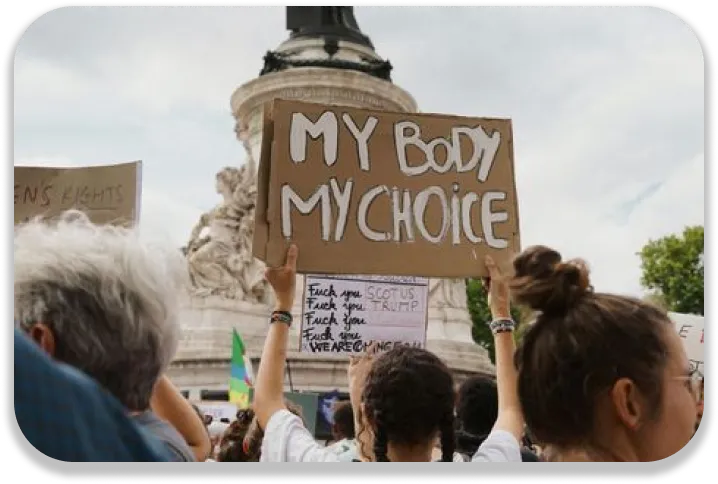

Today, young people are becoming more and more committed. They fight for causes that are important to them. They dare to defend them in front of a crowd of politicians.
An example of protest
Today's young people are keen to fight for what matters. Whether it's about ecology, feminism, politics or even for others. You could say that young people are affirming themselves. They are much more attentive to what concerns them. Young adults are less self-centred. In the past too, young people were committed but less "for others". Now, mutual aid is more important. They demonstrate for a better society. A society with fair laws, for example.
The defended causes
Ecological issues affect them first, as they are the future. The most obvious example is Greta Thunberg and her commitment to the planet. Global warming issues are particularly driven by young people. Feminism and women's rights are more and more in the spotlight. We dare to talk about feminicides and we denounce them. We fight against the ban on abortion and the non-taboo of menstruation. And even if the government bans something, we fight even harder to change it. In Poland, for example, even though abortion is practically forbidden, women continue to protest to change the law. The fight against hunger is another cause supported by young people who want more equality. The big differences between rich and poor are less and less tolerated.
The digital advantage
One of the advantages for young people is digital technology. Thanks to digital technology, they can get their message across even more. Not only strikes and protests, but social media posts also have a global impact. This was seen with the Black Lives Matter movement which generated millions of posts on Instagram and Twitter. Access to fast information is also an advantage for them. They can share a cause on the web and be supported by people all over the world. By gaining popularity, they can hope to share their ideas and causes.